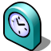

Time
| Deskbar: | ||
| Ubicación: | /boot/system/preferences/Time | |
| Configuración: | ~/config/settings/networktime settings - Todos los ajustes relacionados a la sincronización de la hora a través de la red ~/config/settings/RTC_time_settings - Ajuste del reloj de hardware (local o GMT) ~/config/settings/Time settings - Ajuste del huso horario ~/config/settings/Time_preflet_window - Almacena la posición de la ventana del panel, etc. |
El panel de las preferencias horarias está dividido en cuatro pestañas:
 Fecha & Hora
Fecha & Hora

A la izquierda, se puede configurar el día del mes simplemente dando clic sobre él en el calendario. Puede cambiar el mes y el año dando clic sobre él y usando las flechas (hacia arriba/ hacia abajo) hasta el correcto, o las teclas del cursor en el teclado.
De una forma similar, se configura la hora a la derecha, o simplemente mueve las manos del reloj directamente.
Time zone (Huso horario)

Simplemente encuentre y seleccione su país en el listado de continentes y presione . Para paises que tienen más de una zona horaria deberá expandir un nivel más.
A la derecha encontrará la hora de la zona horaria establecida actualmente y una vista previa de la hora que ha seleccionado.
También a la derecha hay un ajuste para el reloj de hardware de su computadora. Hay dos modalidades para el reloj:
| para mostrar su hora local, la cual normalmente querrá si tiene un arranque dual con Windows. | ||
| para mostrar el tiempo medio de Greenwich (GMT, por sus siglas en inglés), que es el ajuste compatible con UNIX. |
Hora de la red
Configurar la hora y fecha manualmente será algo obsoleto si tiene conexión a internet. Existen servidores públicos que proporcionan señales con la hora muy exactas.

Con los botones / puede añadir/quitar servidores NTP-servers del listado.
Las casillas de selección siguientes le dicen al sistema que debe cuando esté sincronizando, y no sólo el seleccionado, y , para que pueda estar seguro que su reloj siempre mostrará la hora correcta.
Puede en caso que haya eliminado los servidores NTP funcionales accidentalmente y su reloj manualmente. También puede hacer la sincronización desde la línea de comandos (o desde un script):
Time --update
Reloj

La última pestaña muestra las opciones del reloj que se muestra en la barra de escritorio (Deskbar). Puede desactivar el reloj completamente con la primera casilla de selección. Los demás igualmente se explican solos.
recupera la configuración que estaba activa cuando inició las preferencias de Hora.